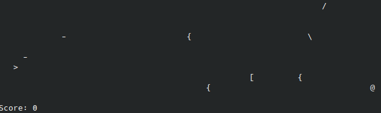

Making a Tiny Shmup With Parsec
I recently made a few games for the Haskell Tiny Game Jam and thought I’d share some of my experience with one of them because it was really fun and the way it turned out is completely different from what I would have done without the constraints of the contest.
Unfortunately, due to school and other things, I didn’t get this post up before the end of the contest and then it sat on the back burner for a bit, but I’m posting it now! There were also some last-minute character savings I found while writing this that allowed me to add another feature I had had in mind, so the code here isn’t 100% representative of the final code, but it’s illustrative enough for the purpose of this post.
I’m also happy to be able to write here that shmupemup, the game in discussion, won in its category! Tying with space-invaders by meooow25.
You can see the code and documentation here in the game jam repo.
The Game Jam
If you’re unfamiliar, the Haskell Tiny Game Jam was a contest that ran through February, in which participants must create playable games in 10 lines of 80 characters or less of Haskell. There are four categories, two of which are relevant to this post:
base-10-80: Imports are allowed, but only from thebasepackage.default-10-80: Imports are allowed from any package distributed with GHC, i.e. boot packages. Additionally, a secondImport.hsfile is allowed which is not limited in length, but can only contain imports and re-exports.
Although it is a very interesting topic, this post isn’t really about squeezing a game to fit such limiting constraints, but rather a specific technique that came out of that process.
Starting
For my third game, I decided I wanted to make a side-scrolling shmup. Before I started writing any code, I was conceptualizing the implementation as something like a cellular automaton. Characters representing the player, shots, and enemies would affect their neighbors according to a set of rules. To make it an actual controllable game, some rules would be enabled or disabled based on user input.
When I actually started coding, it made sense to implement this as two functions, one for horizontal interactions, and one for vertical interactions. Then, with the game state stored as a list of lines, the update could be done with something like transpose . map (vertical input) . transpose . map (horizontal input). These two functions ended up looking something like this:
horizontal 'a' (' ':'>':rest) = "> " ++ horizontal 'a' rest
horizontal 'd' ('>':' ':rest) = " >" ++ horizontal 'd' rest
horizontal ' ' ('>':' ':rest) = ">-" ++ horizontal ' ' rest
horizontal key ('-':' ':e:rest) | enemy e = " X " ++ horizontal key rest
horizontal key (' ':e:rest) | enemy e = e : ' ' : horizontal key rest
horizontal key ('-':e:rest) | enemy e = " X" ++ horizontal key rest
horizontal key ('>':e:rest) | enemy e = "X " ++ horizontal key rest
horizontal key (e:rest) | enemy e = ' ' : horizontal key rest
horizontal key ('-':x:rest) = " -" ++ horizontal key rest
horizontal key (x:rest) = x : horizontal key rest
vertical 's' ('>':' ':rest) = " >" ++ vertical 's' rest
vertical 'w' (' ':'>':rest) = "> " ++ vertical 'w' rest
vertical key ('X':rest) = ' ' : vertical key rest
vertical key ('/':'>':rest) = " X" ++ vertical key rest
vertical key ('/':_:rest) = " /" ++ vertical key rest
vertical key "/" = "\\"
vertical key ('>':'\\':rest) = "X " ++ vertical key rest
vertical key (_:'\\':rest) = "\\ " ++ vertical key rest
vertical key ('\\':rest) = '/' : vertical key rest
vertical key (x:rest) = x : vertical key rest
enemy = (`elem` "@\\/")This doesn’t look nearly as much like a cellular automaton as it did in my head, but it worked. Except that after the first pass of minimizing, my code was still about fifteen lines long. I probably could have saved a line or maybe even two with a bunch of little tricks, but there was no way I could make it just 10 lines without something more.
Moving Categories
One option would be to change categories. I had originally been using the rules for the “base” category. Switching to “default” would allow me to use an Import.hs to save on import space and also get rid of a re-implementation of traverse.
But even with these savings, I still couldn’t get it under 800 characters. So I started randomly scrolling through the boot libraries until Parsec caught my eye. I realized that what I had was not a cellular automaton. It was a string rewriting system. Equipped with Parsec and this new perspective, I wrote something like this:
-- Renamed: b
runParser parser = fold . fold . parse (many parser) ""
-- Renamed: f
enemy = oneOf "{[@\\/"
-- Renamed: h
horizontal 'a' = try (string " >" $> "> ") <|> horizontal 'a'
horizontal 'd' = try (string "> " $> " >") <|> horizontal 'd'
horizontal ' ' = try (string "> " $> ">-") <|> horizontal ' '
horizontal _ = asum $ map try
[ string "- " *> enemy $> " X "
, (:" ") <$> (string " " *> enemy)
, string "-" *> enemy $> " X"
, string ">" *> enemy $> "X "
, enemy $> " "
, string "-" *> anyChar $> " -"
, (:[]) <$> anyChar
]
-- Renamed: v
vertical 's' = try (string "> " $> " >") <|> vertical 's'
vertical 'w' = try (string " >" $> "> ") <|> vertical 'w'
vertical _ = asum $ map try
[ string "X" $> " "
, string "/>" $> " X"
, string "/" *> anyChar $> " /"
, string "/" *> eof $> "\\"
, string ">\\" $> "X "
, anyChar *> string "\\" $> "\\ "
, string "\\" $> "/"
, (:[]) <$> anyChar
]And after some effort minimizing, this aproach got the game under ten lines! I even had some extra room for more enemies and a score counter.
Domain-Specific Combinators
I don’t want to focus much on the minimization part here, but I will mention that I created some ad hoc combinators to DRY the rules up a bit. Specifically, because almost half of the rules simply replace a string with another string, abstracting that out seems natural and It would’ve been good even without the size requirement.
Here’s the final version of the parsers, unminified and with commentary and type signatures:
type Parser = Parsec String () String
-- Renamed: b
runParser :: Parser -> String -> String
runParser parser = fold . fold . parse (many parser) ""
-- Replace occurrences of the string x with y. This is a pretty fundamental
-- concept for this approach. A version that takes a parser as the first
-- argument would be useful as well, but here we manage to get away with the
-- pattern `from --> to <* after` which ends up equivalent to `(string from *>
-- after) $> to` meaning it matches the string `from` followed by something
-- accepted by `after` and replaces that with `to`.
-- Renamed: %
(-->) :: String -> String -> Parser
x --> y = string x $> y
-- This is used for the input handling recursive cases. It's pretty specific to
-- this game. Even in a non-constrained version of the game, this wouldn't be as
-- useful; it would make more sense to split the rules into input handling and
-- not, with the former falling through to the latter. Combining these into one
-- recursive parser ends up saving a few characters though and all savings must
-- be taken. Still though, in a more thought-out version of this technique,
-- something to deal with input would be good, perhaps by equipping the parser
-- type with the ability to read the input and having a parser combinator that
-- succeeds iff the input matches some condition.
(#) :: Parser -> (Char -> Parser) -> Parser
p # f = try p <|> f '#'
-- Renamed: f
enemy = oneOf "{[@\\/"
-- Renamed: h
horizontal :: Char -> Parser
horizontal 'a' = " >" --> "> " # horizontal -- Move the player left
horizontal 'd' = "> " --> " >" # horizontal -- Move the player right
horizontal ' ' = "> " --> ">-" # horizontal -- Fire laser
horizontal _ = asum $ map try
[ "- " --> " X " <* enemy -- Destroy an enemy with a laser one space away
, (:" ") <$> (string " " *> enemy) -- Move an enemy left if it can be
, "-" --> " X" <* enemy -- Destroy an enemy with a laser in front of it
, ">" --> "X " <* enemy -- Destroy the player by collision with an enemy
, enemy $> " " -- Otherwise, the enemy is at the end of the screen, destroy it
, "-" --> " -" <* anyChar -- Move a laser right
, (:[]) <$> anyChar -- Leave any other character as is
]
-- Renamed: v
vertical :: Char -> Parser
vertical 's' = "> " --> " >" # vertical -- Move the player down
vertical 'w' = " >" --> "> " # vertical -- Move the player ul
vertical _ = asum $ map try
[ "X" --> " " -- Disipate an explosion
, "/>" --> " X" -- Destroy the player by collision with a downward enemy
, "/" --> " /" <* anyChar -- Move a downward enemy down
, "/" --> "\\" <* eof -- Bounce a downward enemy off the bottom of the screen
, ">\\" --> "X " -- Destroy the player by collision with an upward enemy
, anyChar *> "\\" --> "\\ " -- Move an upward enemy up
, "\\" --> "/" -- Bounce an upward enemy off the top of the screen
, (:[]) <$> anyChar -- Leave any other character as is
]What’s Next?
I really enjoyed how declarative this approach is and I definitely want to explore it further. But there are some questions that need to be answered before this is used in a more serious game.
Is there a way to better handle vertical and horizontal rules together? It would be nice to separate out unrelated rules and combine related rules. For example, grouping all the rules for player movement together. It may be enough to just have a product type of two parsers and some combinators to work with that type.
How should non-local mechanics work? In my tiny game, for example, the scorekeeping is handled by counting the number of explosions (Xs) each frame. This could be handled fine by stateful parsers, and likewise for the randomization. But what about more complicated non-local mechanics like line of sight, fog of war, level generation, or path finding? What I’d love to see is something logic programming-ish to match the declarative-nes of the local rules, though I’m not exactly sure what that would look like.
Another thing to consider is performance. It shouldn’t matter much as long as the parser is only scanning the small visible area, but it’d be nice to be able to handle simulation of a large game world. The use case is specific enough that a purpose-built library should easily be able to beat out a general-purpose parsing library.
At some point, I’m planning on creating a roguelike using this method, and maybe abstracting out the common bits into a library, but at the moment I’m a bit busy with school so that will probably have to wait.